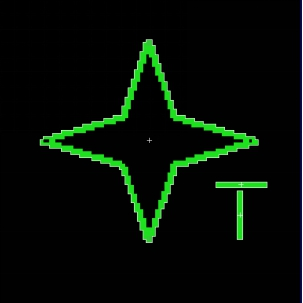

在表面检测领域，针对素表面、灰度渐变、浅纹理背景物体表面的缺陷（脏污或细微瑕疵），瑕疵检测工具根据通过采样对相邻区域内的灰度变化即灰度梯度进行检测，以灰度梯度的变化程度来反映区域内是否存在瑕疵。这种方式在一定程度上避免了光照影响，克服了基于灰度检测方式的缺点。其示意图如图1所示。
| 分类 | 参数名称 | 参数描述 |
|---|---|---|
| 属性窗口 | ROI区域 | 工具执行检测的区域，分为7种：整幅图像、矩形ROI、仿射矩形ROI、圆形ROI、圆环ROI、椭圆ROI和多边形ROI。 |
| 检测类型 | 瑕疵检测工具的检测类型分为2种：基于面积和基于分组。选择基于分组的检测类型时，显示是否填充、是否过滤面积、是否仅显示滤除后瑕疵三个参数。 |
|
| 是否填充 | 选择“是”，则对瑕疵区域小于指定面积的缺陷进行填充，会影响瑕疵分组个数与总瑕疵量。仅在检测类型选择基于分组时有效。 | |
| 是否面积过滤 | 选择“是”，则对结果中面积小于面积过滤下限、大于面积过滤上限的瑕疵进行过滤。仅在检测类型选择基于分组时有效。 | |
| 是否仅显示滤除后瑕疵 | 选择“是”，则仅显示过滤后的瑕疵，否则将显示全部瑕疵。仅在检测类型选择基于分组时有效。 | |
| X方向瑕疵大小 | X方向上检测到的最小瑕疵的尺寸。 | |
| Y方向瑕疵大小 | Y方向上检测到的最小瑕疵的尺寸。 | |
| X方向移动量 | X方向上扫描移动步长。 | |
| Y方向移动量 | Y方向上扫描移动步长。 | |
| X方向比较段数量 | 计算X方向上某个采样点位置处瑕疵等级时所采用的比较区段，比较段的取值范围是[2, 20]。 | |
| Y方向比较段数量 | 计算Y方向上某个采样点位置处瑕疵等级时所采用的比较区段，比较段的取值范围是[2, 20]。 | |
| 瑕疵等级阈值 | 表征当前位置瑕疵程度的参数，若当前位置的瑕疵等级超过该瑕疵等级阈值，则判定当前位置属于瑕疵。 | |
| 检测方向 | 即关注瑕疵出现（灰度变化）的方向，瑕疵检测工具的检测方向分为3种，X、Y和XY方向，主要使用XY方向。当只关注X或Y方向是否存在瑕疵时，选择X或Y方向；均关注时，选择XY方向。 | |
| 开启并行运算 | 是否开启并行运算，选择是时，算法将开启OpenMp并行计算方式，可以提升计算速度，但可能出现耗时不稳定的情况，选择否时，算法将关闭OpenMp并行计算。 | |
| 线程数百分比 | 设置并行运算的线程数百分比，有效范围为 (0, 0.75]，对应表示(0%, 75%]百分比范围。 | |
| 图像窗口 | ROI区域 | 图像中指定的 矩形/仿射矩形/圆形/圆环/椭圆形/多边形 检测区域。 |
| 输入图像 | 显示待检测的图像。 | |
| 数据链 | 输入图像 | 输入图像宽度、高度、像素大小，同图像窗口的输入图像参数。 |
| 二维线性变换 | 目标相对于模板的平移、旋转、缩放变换。 | |
| 高级界面 | 无 | 无 |
| 分类 | 参数名称 | 参数描述 |
|---|---|---|
| 监视窗口 | 输入图像 | 输出图像宽度、高度、像素大小。 |
| 瑕疵分组个数 | 属性窗口检测类型参数选择基于分组时，瑕疵分组的个数。选择基于面积时，瑕疵分组个数值为1。 | |
| 总瑕疵量 | 检测到的总体瑕疵量。 | |
| 瑕疵结果 | 瑕疵的具体信息，包含每个瑕疵的瑕疵量和瑕疵质心。 | |
| 执行结果 | 工具执行结果。 | |
| 执行时间 | 工具执行时间。 | |
| 图像窗口 | 输入图像 | 显示工具执行结果图像，同监视窗口的输入图像参数。 |
| 瑕疵结果 | 显示图像查找区域内的瑕疵结果。 | |
| 执行结果 | 显示工具执行结果，执行成功显示“OK”，执行失败显示“NG”，同监视窗口的执行结果参数。 | |
| 结果图像 | 瑕疵检测结果图（采样后的能量图） | |
| Defect显示 | 瑕疵检测所有Blob结果（缺陷结果） | |
| 数据链 | 瑕疵分组个数 | 瑕疵分组的个数，供后序工具使用，同监视窗口的瑕疵分组个数参数。 |
| 总瑕疵量 | 检测到的总体瑕疵量，供后序工具使用，同监视窗口的总瑕疵量参数。 | |
| 瑕疵结果 | 瑕疵的具体信息，包含每个瑕疵的瑕疵量和瑕疵质心，供后序工具使用，同监视窗口的瑕疵结果参数。 | |
| 梯度结果图形 | 瑕疵等级判定图 | |
| 原图中的结果图像 | 瑕疵检测结果图（能量图在原图上呈现） |
基于面积的检测，只关注物体表面是否存在瑕疵，以及瑕疵的总量，并不关注瑕疵的具体形态和分布信息；基于分组的检测，除了关注总的瑕疵量外，仍会关注瑕疵的分组数、每组瑕疵的具体形态及分布，还可以对瑕疵进行预处理及筛选。比如可以针对具体情况进行缺陷填充，或对检测出来的瑕疵进行面积过滤。

瑕疵比较细微时，X、Y方向上的瑕疵大小可以设置的小一些；反之可以适当增大，以提高检测效率，但瑕疵大小不可以设置过大，否则可能检测不到瑕疵。
X、Y方向上的移动量设置的越大，图像中参与采样计算的点越少，但最小是一个像素，同时移动量越大则采样点越稀疏，检测效率越高。
X、Y方向上的比较段数量设置的越大，则瑕疵的受影响范围越大。如果想要得到比较精细的瑕疵轮廓，则比较段数量应当适当设置的小一些。比较段数量越大，检测效率越低。
检测类型选择基于面积时，监视窗口瑕疵结果中的质心坐标为(-1.000000，-1.000000)。
参见“\Samples\瑕疵检测工具.gvp”。